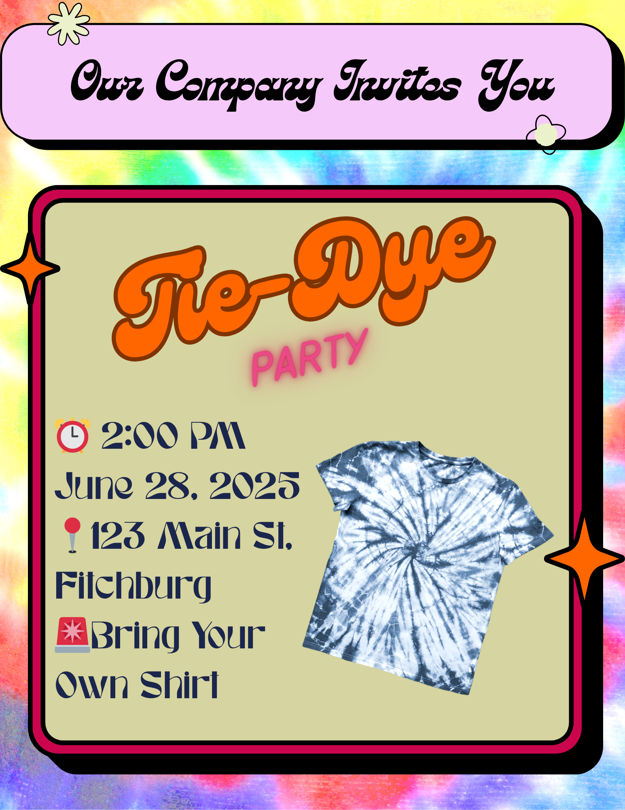

Content Creation Examples
Content Creation Examples
See how our custom flyers and templates can boost your brand presence.
See how our custom flyers and templates can boost your brand presence.
When templates are crafted just for you, they reflect your unique style and messaging, making your posts instantly recognizable. Custom templates help you maintain a cohesive look, engage your audience more effectively, and streamline content creation so you can focus on growing your business.
Each template is fully layered and ready to be personalized with your logo, colors, and messaging. Whether you’re posting tips, promotions, or team highlights, these designs make it simple to create professional, on-brand content quickly.
Flyers provide a clear, focused way to share important messages. Whether promoting events, groups, or your business story. Designed for digital use on social platforms and print-ready formats, they help you reach your audience wherever they are, with professional visuals that boost credibility and engagement.
